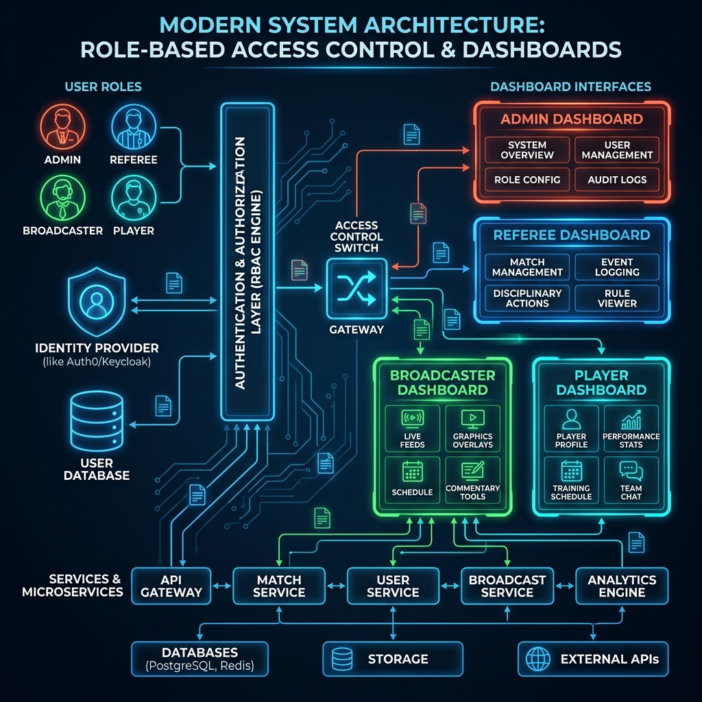

System Access & Persona Branches
Updated Walled Garden Architecture & Middleware Flow for Tennis Suite (Sprint 12)

ADMIN / HOST
Path: /admin
- Identity: Administrative creator and manager of the event.
- Visibility: Complete system access for event setup.
- Capabilities: Create/publish tournaments, manage teams, staff onboarding.
- Restrictions: Separated from technical monitoring.
TOURNAMENT DELEGATE
Path: /delegate
- Identity: Ultimate arbiter for exceptions and rules.
- Visibility: All data, audit logs, referee inputs.
- Capabilities: Approve/deny manual bracket replacements, reverse finalized states.
- Restrictions: Actions trigger immutable audit logs.
SYSTEM MONITOR
Path: /monitor
- Identity: Proactive technical supervisor.
- Visibility: Telemetry dashboard (latency, packet loss, heartbeats).
- Capabilities: Stream hot-swapping, force connection resets.
- Restrictions: Cannot mutate match scores or rules.
REFEREE
Path: /referee
- Identity: Authoritative official on the court.
- Visibility: Active matches they are assigned to officiate.
- Capabilities: Live score mutation (Ground Truth), offline queue syncing.
- Restrictions: Cannot modify rules or see other referees' matches.
COURT MARSHAL
Path: /tournaments
- Identity: Logistical coordinator on the ground.
- Visibility: Master view of all courts and match assignments.
- Capabilities: Update court status (READY, WARMUP), dispatch matches.
- Restrictions: Cannot act as a referee or directly mutate scores.
BROADCASTER
Path: /broadcast
- Identity: Reactive media observer.
- Visibility: Real-time read-only view of active match states.
- Capabilities: Subscribes to Server-Sent Events (SSE) for overlays.
- Restrictions: Blocked from modifying any match states.
PLAYER
Path: /team
- Identity: Active participant in the tournament.
- Visibility: Personal schedule, rules, opponent info.
- Capabilities: Agent OS (AI Chat) and upcoming match previews.
- Restrictions: Blocked from mutating scores or accessing admin data.
PUBLIC FAN
Path: /public
- Identity: Passive external observer.
- Visibility: Public scoreboards, published pools.
- Capabilities: View active matches.
- Restrictions: Cannot write or mutate data.